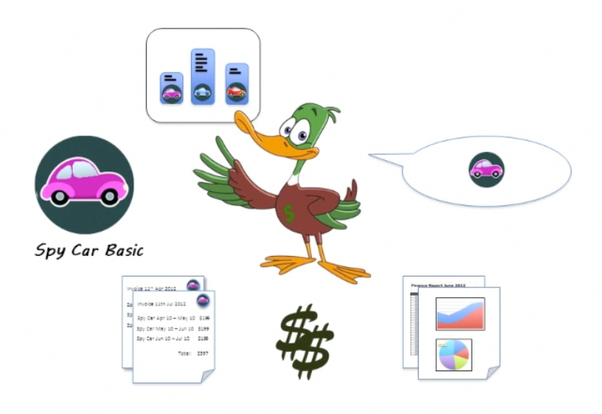

Kill Bill sits at the center of your business. It
understands your catalog and manages customer purchases and
plan changes (upgrades, downgrades and cancellations). It
knows what plans a customer has subscribed to and can
provide that information to other systems, including your
product. It creates invoices on a regular basis, triggers
payments against your payment providers (PayPal, Credit Card
Gateway etc.) and can produce finance reports and business
analytics.
All subscription management services provide these basic
functions. What makes Kill Bill different is that we provide
you with the flexibility to truly customize the system to your
needs. We believe that it is critically important that the
billing system owns all the business logic to manage how plan
changes take place or which add-ons are available to a given
plan, or even to manage the custom business logic around
promotions or dunnings that sets you apart from your
competition. To support these advanced features Kill Bill has
flexible rules that can express a wide variety of plan changes
and cancellation behaviors, but for when that's not enough,
you can add your own custom logic to Kill Bill in the form of
Plugin code that can customize the system behavior to meet
your specific needs.
Core Features
Kill Bill is a fully fledged subscription billing system. This
section outlines the features that it shares with many
comparable products on the market.
Subscription Management:
Kill Bill can
- create and cancel subscriptions associated with a
billing plan
- upgrade and downgrade between plans
- charge customers on a fixed or recurring basis with
support for multiple billing periods (monthly, quarterly,
annual etc.)
Invoices and Proration:
Kill Bill generates invoices, when they are required and can
prorate off cycle charges onto a single recurring bill cycle.
For example, if you have a customer who is billed on the 15th
of every month and they buy a product on the 1st of January,
Kill Bill can correctly charge them for the partial month 1st
- 15th January and then continue to bill them every 15th of
the month with the new subscription combined with the others.
Invoices can be automatically emailed to customers.
Payments: Kill Bill
triggers payments with your payment providers as soon as an
invoice has been generated. Payment failure notices can be
automatically mailed out to customers (also see Overdue
Enforcement in the Advanced sections). Kill Bill interfaces
with payment providers via plugin API's that make it easy to
add new payment providers if you need to interface with
providers that we do not already support. [Note: plugins for
Litle and PayPal are currently under development]
Reporting and
Analytics: Kill Bill supports finance
reporting (revenue recognition, aging etc.) and business
dashboards for monitoring acquisition, monthly recurring
revenue and churn. The reports and analytics can be driven off
a separate database so that they do not impact production
performance. [Note: reports and dashboards are currently under
development]
Advanced Features
This section outlines some of the advance features that make
Kill Bill a little different - and by different we mean
better.
Multi-phase plans: Do
you need a plan that offers a 30 day trial followed by a
6 month discount period and then transitions to a full price
evergreen subscription? No problem. Kill Bill supports the
configuration of plans with multiple phases, each phase can
specify its own pricing and even billing term.
Plan change rules: Do
you need to have trials cancel immediately but have paid plans
cancel at the end of their term? Maybe you want upgrades to
take place immediately but downgrades to happen at the end of
term? All of this is business logic that should live in the
billing system not in applications. Kill Bill natively
supports powerful change rules that ensure that plan changes
and cancellations happen according to your policies.
Product tiers and add-ons:
So, you want three tiers of product with some add-ons only
available to the top tier customers. Kill Bill has native
support for tiered products and add-ons, allowing you to
specify which add-ons are available on which product tiers and
if the customer downgrades automatically cancel add-ons that
are no longer available. Of course, Kill Bill can tell you
what it's going to do before you do it so your users can
confirm.
Price lists: You
want to offer a special set of prices to customers coming in
through one of your partners. They get a 30% price for six
months. But what happens if they upgrade during those six
months? Maybe you want them to stay in the same price list and
get 30% off the new plan, but only for the remainder of the
discount period. With Kill Bill you can arrange plans into
Price Lists and provide Plan Change rules to specify exactly
he behavior you need.
Overdue Enforcement: Kill Bill
allows you to write rules to specify what happens
when a customer payment fails. You can choose to take
different actions based on the payment failure type, the
customer's plan, the time since the last unpaid invoice etc.
This allows you to build multi-phased enforcement where the
customer can receive warnings and have features gradually
removed until they are finally shut down.
Internationalization: Kill Bill
understands the internationalization of currency
representation, so that it provides the correct decimal
separator, number of decimal places and rounding rules for
each locale. All customer interactions, emails, invoices etc.
are fully internationalized so you can create invoice and
email templates to match the locales of your customers. [Note:
this feature is currently incomplete]
Time zones: You have a customer in
Japan that buys a product on March 3rd. However, your
California based billing provider sends her invoices that
start her subscription on March 2nd because it was still March
2nd in California when the purchase was made. This can be very
confusing to customers. Kill Bill does time zones right. Your
customer accounts have a time zone associated with them and
your customers are invoiced in that time zone.
Event based: Most
cloud based providers have offline billing and payment runs
that introduce a delay of sometimes up to 48 hours between
when a customer signs up and when their card is charged. Kill
Bill runs as an event based system, as soon a subscription is
created that triggers an event, which triggers the creation of
an invoice, and in turn, triggers a payment. The customer's
card will be charged within seconds of signing up which is
better for you and less confusing for them.
Coupons: Need a way to let some of
your customers access that special discount price list? Kill
Bill lets you create and manage coupons. Each coupon has an
expiry date (can be unlimited) and a maximum number of uses
(can also be unlimited) and gets mapped to a specific price
list. [Note: this feature is under development]
Plugins
In today's world the ability to rapidly test and roll out
promotions, alternate pricing models and custom billing features is critical to
your companies ability to compete. With conventional
cloud-based subscription solutions you are limited to the
capabilities that they offer. Before Kill Bill the only way to
have complete control over your billing behavior was by
building your own billing system from scratch and few
companies have the skills or resources to do that. Kill Bill
resolves this dilemma by providing the first Billing Platform.
Our plugin architecture allows you to add custom logic that
can be triggered by events in the system. Which means that the
only logic that you need to build are the customizations.
Our plugin system uses the OSGi standard and today we support plugins written in either
Java or Ruby [Scala under development].